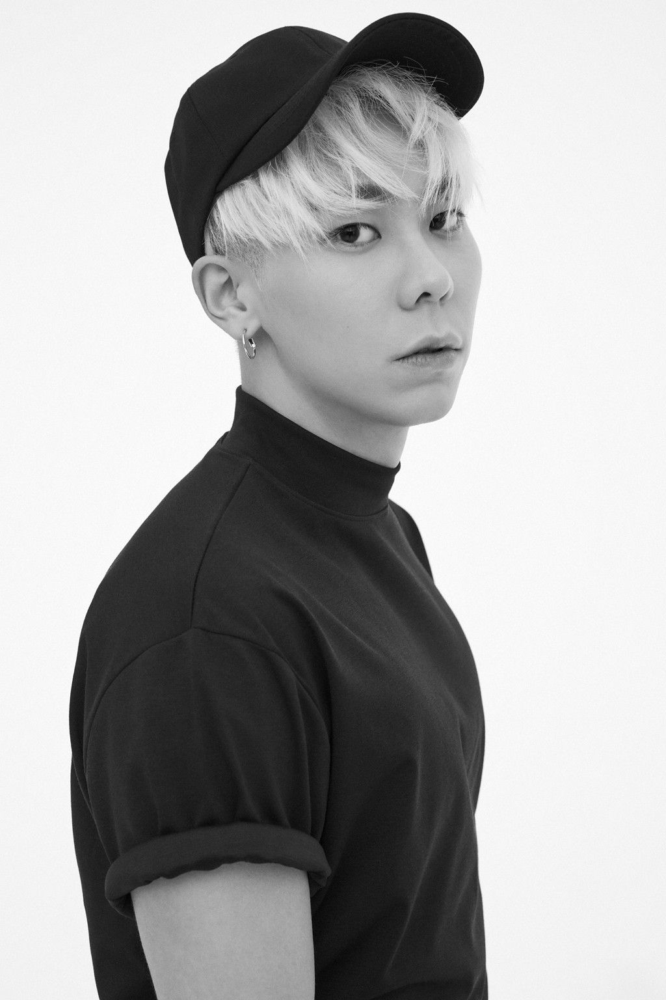
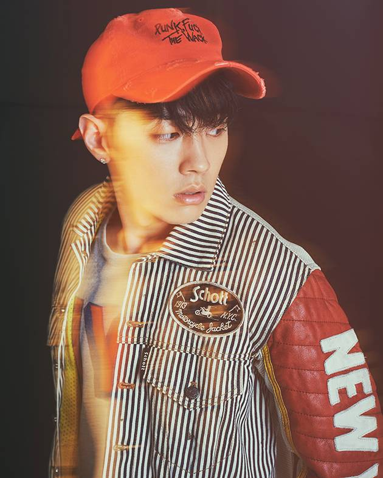
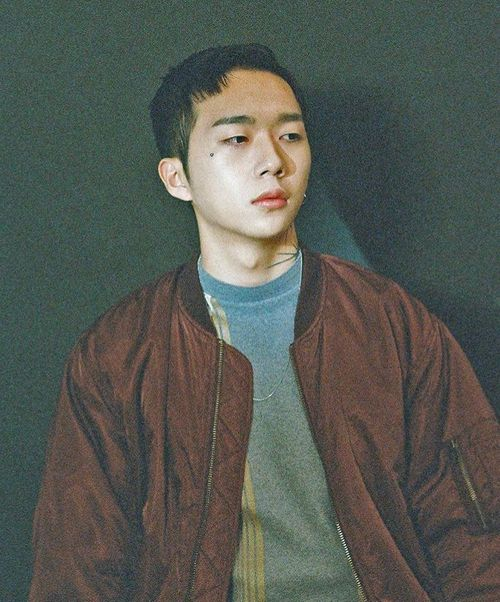

- 일리네어 레코즈
- 개요
- 멤버
- 대표곡
- Just Music
- 개요
- 멤버
- 대표곡
- AOMG
- 개요
- 멤버
- 대표곡
- Comment & Question
AOMG
1. 개요
AOMG는 박재범이 설립한 힙합 레이블이다.[4] 박재범이 대표이사직을 맡고 있으며, 소속 아티스트들은 현재 자신들의 곡뿐만 아니라 타 가수들의 곡에 프로듀싱, 피처링 등으로 활발히 활동하고 있고, 각종 공연의 메인으로 활약하고 있기도 하다. 또한 구성원을 보면 알 수 있듯이 여기는 레이블 내에서 프로듀싱과 디제잉, 뮤직비디오 제작, 뮤직 아트 등 거의 모든 것을 소화해 낼 수 있다.
2. 멤버
ㆍ 박재범

대한민국에서 활동하는 한국계 미국인 3세 출신의 래퍼이다. 그 외에도 비보이, 프로듀서, CEO 등으로 활동중이다. 아이돌 그룹 2PM의 전 리더, 리드보컬, 메인댄서를 맡고 있었다. 시애틀에서 태어나고 자랐다. 비보이 출신으로 어머니의 권유로 참여한 2004년 JYP 시애틀 오디션에서 합격하여 한국에서 연습생 생활을 시작했다.
2009년 모종의 사건으로 인하여 2PM에서 탈퇴한 후 시간이 지나 싸이더스HQ 기획사와 계약하고 솔로 활동을 시작했다. 2013년에 계약기간이 끝나자 같은 해 10월에 힙합 레이블 AOMG를 설립하여 수장으로서의 활동을 보여주고 있다.[11] 2017년에는 오랜 친구이자 음악적 동반자 프로듀서 차차말론과 글로벌 마켓을 염두에 둔 하이어뮤직을 설립했다.
ㆍ 로꼬
본명 권혁우, 엠넷의 힙합 서바이벌 프로그램 SHOW ME THE MONEY의 초대 우승자. 현재 AOMG 소속이다. 엠넷의 도박이나 다름없던 쇼미더머니를 안착시킨 인기 래퍼다.
또한 홍대쪽에서 더페이머스버거라는 수제버거 가게 사업을 하고있다. 흔히 로꼬버거라 불리며 맛이나 양도 많고 혜자라는 평.
쇼미더머니 최초 우승자, 최초 일반인 우승자다. 쇼미더머니가 처음 시작할때 참전하여 수많은 언더그라운드 랩퍼들과 경쟁[6]끝에 우승을 차지했다. 특히 쇼미더머니 본선 첫공연인 2화 방송분에 레전드급 무대들이 펼쳐졌는데[7] 송래퍼와의 경쟁 끝에 MC스나이퍼의 선택을 받아 오른 무대에서 엄청난 임팩트를 남겼다.
ㆍ 그레이
본명은 이성화. 그레이는 뜻 그대로 '회색'을 뜻하는 예명이다. 흰색과 검은색 사이에 수많은 회색이 있듯이 다채로운 매력을 보여주겠다는 뜻이다. 그레이의 영어 표기는 원래 Grey(영국영어)와 Gray(미국영어) 둘 다 쓸 수 있는데, GREY가 아닌, GRAY만을 사용한다. 레이블은 AOMG, 크루는 VV:D (Zion.T, GRAY, Crush, Loco, ELO) 소속이다. 고등학교 1학년 때부터 작곡을 시작했고 2011년 MBC 대학가요제에 "홍대입구"라는 팀으로 참여하여 금상을 탔다. 단 이때 재학 상태가 아니어서 작사/작곡으로만 이름을 올렸다고. 홍익대학교 흑인음악동아리 Brainswords 출신이다.
이후 군대에 갔다온 후(1군단 복무 07년 군번, 09년 말 제대), 2010년부터 본격적으로 음악을 시작해서 가요 작곡 팀에서 활동하다[6]가 2012년에 해체해서 지금의 GRAY라는 예명으로 다시 시작했다고 한다.[7] 로꼬랑은 동아리 Brainswords[8] 선후배 사이이며[9] , 쇼미더머니1 출연 당시 로꼬에게 비트를 제공해 주는 등 무명 시절부터 활발하게 음악적 교류를 하며 지금의 위치까지 함께 올라왔다. 박재범과는 불후의 명곡 편곡 작업을 같이 하게 됐을 때 처음 만났다고 한다. 다른 사람과 작업해도 됐을 터인데 크러쉬가 의리로 박재범에게 그레이를 소개 시켜주었다고 한다.
ㆍ 우원재
1차 예선 때 카메라에 비춰지면서 등장했다.[4] 이후 타이거JK의 심사를 거쳐서 목걸이를 받았다.
가사가 매우 어둡고 극단적인 내용을 담고 있는데, 가사 내용과는 달리 본인의 인스타그램에 따르면 자신은 특별한 사연은 없는 일반인이라고 한다. 알려진 실제 삶이 가사만큼 힘들어 보이진 않는다고 판단한 이들에게 진정성 논란이 생겼으나, 사실 자신이 사연이라고 느낀 게 없다 해서 삶을 부정적으로 생각하지 말란 법도 없긴 하다. 또한 사실은 사연이 있지만 대중들이 생각하는 것만큼 엄청난 사연(ex. 불치병)은 아니라는 뜻에서 나온 말일 수도 있다. 결승에서 밝히길 우울증과 심불안장애가 있다고 한다. 설령 가사 내용이 픽션이라 가정해도 스토리텔링 역시 래퍼의 중요한 능력 중 하나인 만큼 아티스트로써 우원재의 가능성을 부정할 순 없다.
3. 대표곡
ㆍ 시차
ㆍ 하기나해